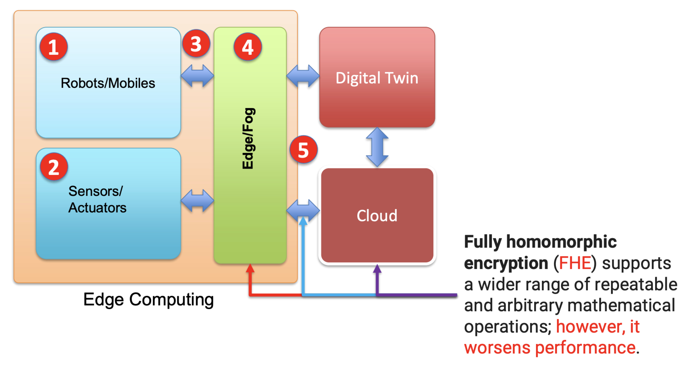
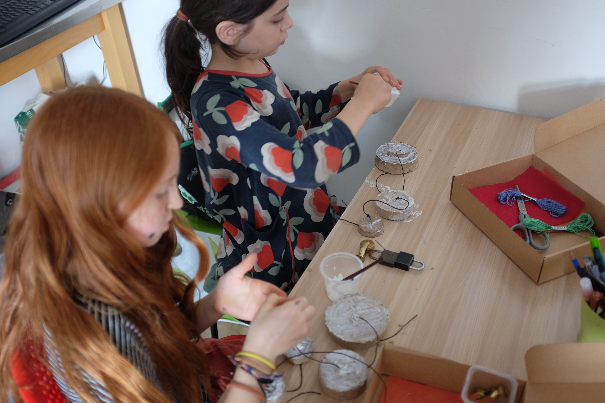
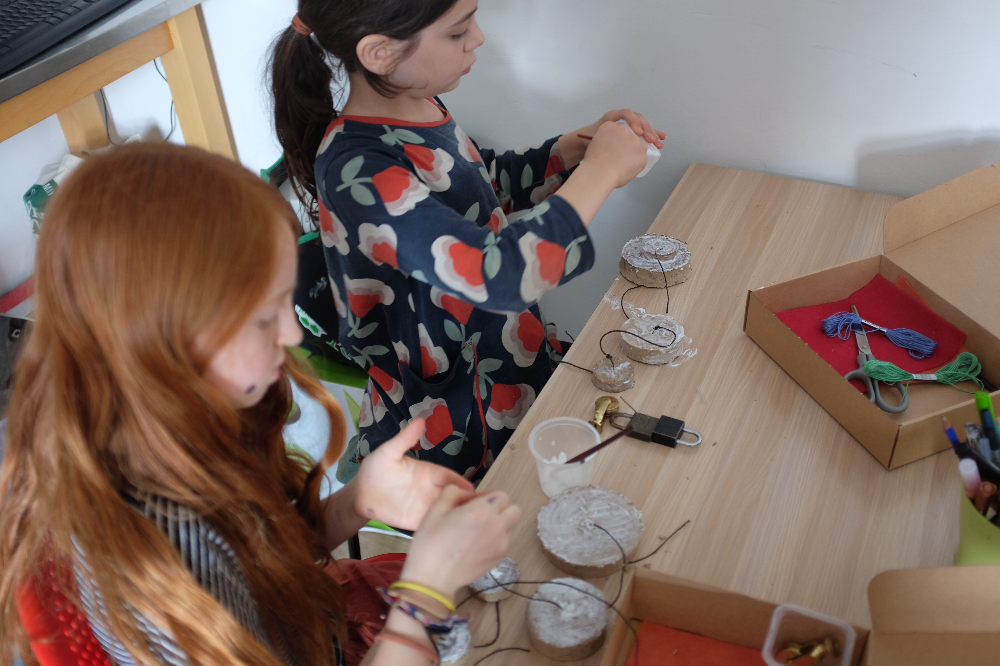
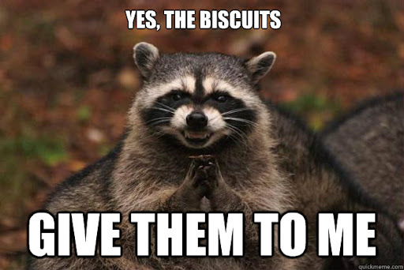

EXPRESSIVE COMPUTER INTERACTIONS & CREATIVE Technologies LAB
Transforming the experience people have with new technologies
Dr Cameron Steer (He/Him)
cameron.steer@uwe.ac.uk
Shape-changing displays and controllers
Deformable textures and non-ridded input surfaces
Metaphors and design principles for physical interfaces.
Edge Computing: Challenges & Opportunities
Mohammad Hosseinabady, PhD
Luke Child (he/him)*
*PhD student - Associate Lecturer - CT Lab Infiltrator (luke.child@uwe.ac.uk)
PhD researcher in the affordances of sonic interaction in designing accessible navigation and narrative experiences in virtual video game environments. Supervisied by Dr Natanya Ford and Dr Tom Mitchell

- Developing sonic interaction systems for accessible virtual narrative and navigation
- Applying inclusive design processes to sonic interaction and game design
- Communicating research in accessible and inclusive formats
- My Staff Profile
- My Website
Rapid Prototyping of Accessible Digital Musical Instruments in Collaboration with Disabled Musicians
- Speculative and Collaborative Design Workshops with Disabled Musicians, Designers and Academics
- The Use of Generative AI Tools in Design Ideation
- Co-design of Bespoke Accessible Digital Musical Instruments
Hugh Aynsley, PhD Candidate.
Rod Dickinson

An interactive public art installation that combines artificial intelligence with surveillance technologies. It was created by Annabel McCourt and Adrian Riley in collaboration with Rod Dickinson and Sarah Selby. Passersby have the opportunity to embody the essence of a historical Grimsby character by striking various poses. Utilising pose detection technology, participants can unveil the narrative of their character, exploring its history through dynamic movements and actions.
Tom
Camera Noise - Exploring Visual to Audio Synthesis
Taking Inspiration from Analogue Optical Sound
- New Instruments for Musical Expression
- Tangible Media
- Integrated Sound and Image
Jasmine Butt, PhD Candidate.
Study 1: Insights from the darkroom
Capturing Processes and Perspectives
Jasmine Butt, PhD Candidate.
Study 2: Tone Lamp Workshops
Interactions with a camera-input musical instrument
Jasmine Butt, PhD Candidate.
Benedict R. Gaster (he/him)*
*Associate Professor in Physcial Computing
- slow technology
- craft to explore life long learning
- analog as a digital metaphor
- meta-design
 


ECI & CT Lab
wide varerity of research interests
weekly meeting in X-block (soon Foundry)
looking for others to collaborate


Demos and Biscuits
please stay and chat